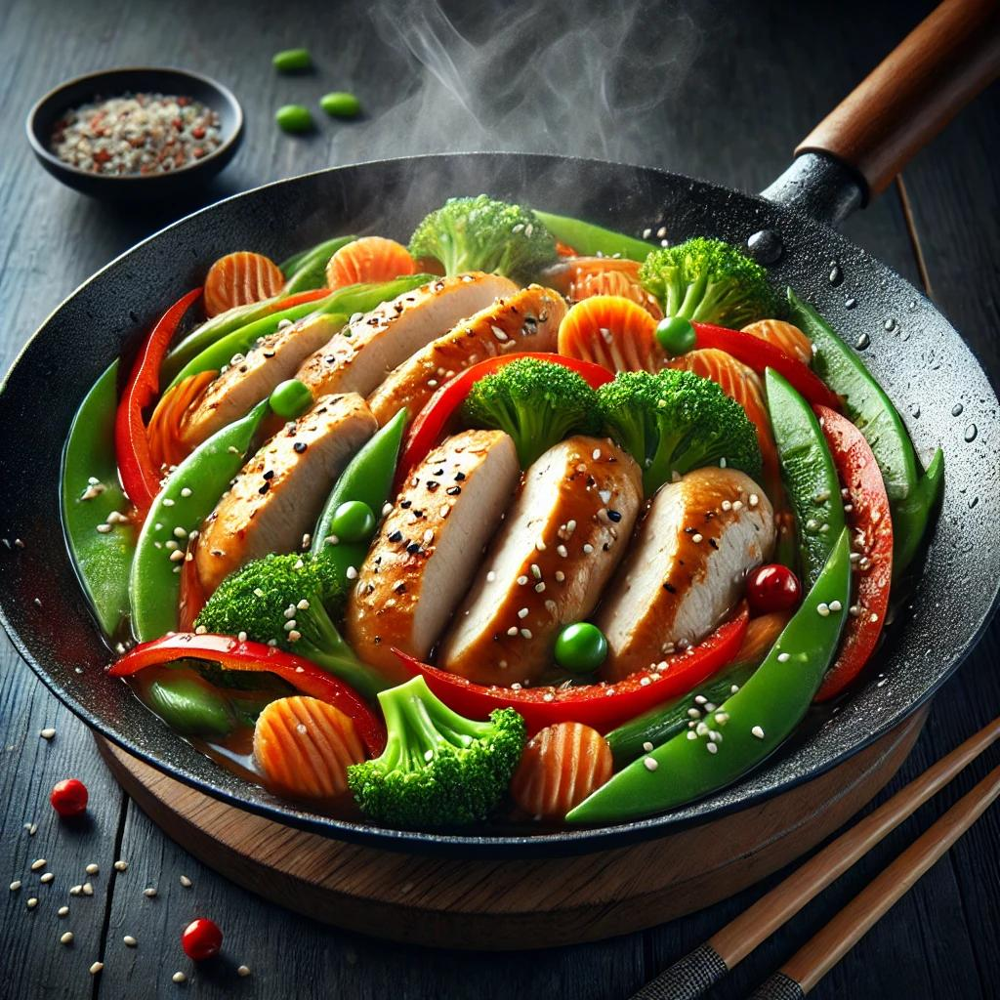

Chicken stir-fry

Ingredients
For stir-fry:
- 2 skinless chicken breast
- 2 tbsp vegetable oil
- 1 red bell pepper
- 1 yellow bell pepper
- 1 cup broccoli
- 1 carrot
- 1 cup of peas
- 2 green onions
For sauce:
- 4 tbsp soy sauce
- 1 tbsp honey
- 1 tbsp rice vinegar
- 1 tsp cornstarch
How to make
- In a small bowl, mix soy sauce, oyster sauce, honey, rice vinegar, cornstarch, and red pepper flakes. Set aside.
- Heat 1 tbsp oil in a pan or wok over medium-high heat. Add the sliced chicken and cook until browned and fully cooked (about 5-6 minutes). Remove from the pan and set aside.
- Add another tbsp of oil to the pan. Toss in the garlic and ginger, stir for 30 seconds, then add bell peppers, broccoli, carrots, and snap peas. Stir-fry for 3-4 minutes until slightly tender but still crisp.
- Return the cooked chicken to the pan. Pour in the stir-fry sauce and stir everything together for 1-2 minutes until the sauce thickens.
- Garnish with green onions and sesame seeds. Serve over steamed rice or noodles.